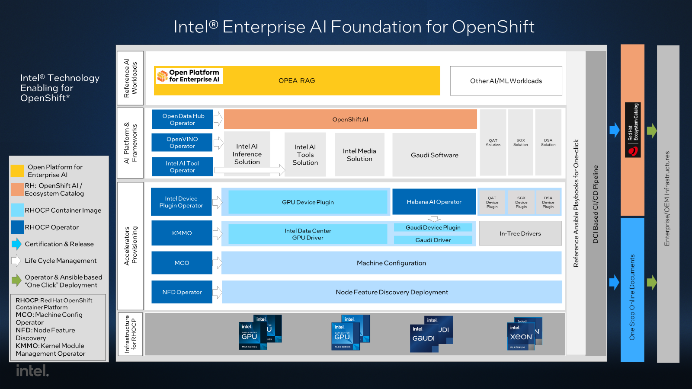

Intel® Technology Enabling for OpenShift*
Overview
The Intel Technology Enabling for OpenShift project focuses on Intel’s enterprise AI and cloud native foundation for Red Hat OpenShift Container Platform (RHOCP) solution enablement and innovation including Intel data center hardware features, Intel technology enhanced AI platform and the referenced AI workloads provisioning for OpenShift.
These Intel Data Center hardware features include:
Intel® Data Center GPU Flex Series
Intel® Data Center GPU Max Series
Intel® Software Guard Extensions (Intel® SGX)
Intel® QuickAssist Technology (Intel® QAT)
The following features will be included in future releases:
Intel® Data Streaming Accelerator (Intel® DSA)
Intel AI hardware and optimized software solutions are integrated into Red Hat OpenShift AI for ease of provisioning and configuration. The Habana AI Operator is used to provision Intel® Gaudi® accelerators and released on the Red Hat Ecosystem Catalog.
Red Hat Distributed CI* (DCI) based CI/CD pipeline is leveraged to enable and test this E2E solution with each RHOCP release to ensure new features and improvements can be promptly available.
The Open Platform for Enterprise AI (OPEA) Retrieval-Augmented Generation (RAG) workloads are used to validate and optimize Intel enterprise AI foundation for OpenShift.

Releases and Supported Platforms
Getting started
See reference BIOS Configuration required for each feature.
Provisioning RHOCP cluster
Use one of these two options to provision an RHOCP cluster:
Use the methods introduced in RHOCP documentation.
Use Distributed CI as we do in this project.
In this project, we provisioned RHOCP 4.14 on a bare-metal multi-node cluster. For details about the supported RHOCP infrastructure, see the Supported Platforms page.
Provisioning Intel hardware features on RHOCP
If you are familiar with the steps mentioned below to provision the accelerators, you can use One-Click solution as a reference to provision the accelerator automatically.
Follow Setting up HabanaAI Operator to provision Intel Gaudi AI accelerator.
Please follow the steps below to provision the hardware features
Setting up Node Feature Discovery
Setting up Machine Configuration
Setting up Out of Tree Drivers
Setting up Device Plugins
Verifying hardware feature provisioning
You can use the instructions in the link to verify the hardware features provisioning.
Upgrade (To be added)
Reference end-to-end solution
The reference end-to-end solution is based on Intel hardware feature provisioning provided by this project.
Intel AI Inferencing Solution with OpenVINO and RHOAI
Reference workloads
Here are the reference workloads built on the end-to-end solution and Intel hardware feature provisioning in this project.
Advanced Guide
This section discusses architecture and other technical details that go beyond getting started.
Release Notes
Check the link for the Release Notes.
Support
If users encounter any issues or have questions regarding Intel Technology Enabling for OpenShift, we recommend them to seek support through the following channels:
Commercial support from Red Hat
This project relies on features developed and released with the latest RHOCP release. Commercial RHOCP release support is outlined in the Red Hat OpenShift Container Platform Life Cycle Policy and Intel collaborates with Red Hat to address specific requirements from our users.
Open-Source Community Support
Intel Technology Enabling for OpenShift is run as an open-source project on GitHub. Project GitHub issues can be used as the primary support interface for users to submit feature requests and report issues to the community when using Intel technology provided by this project. Please provide detailed information about your issue and steps to reproduce it, if possible.
Contribute
See CONTRIBUTING for more information.
Security
To report a potential security vulnerability, please refer to security.md file.
License
Distributed under the open source license. See LICENSE for more information.
Code of Conduct
Intel has adopted the Contributor Covenant as the Code of Conduct for all of its open source projects. See CODE_OF_CONDUCT file.